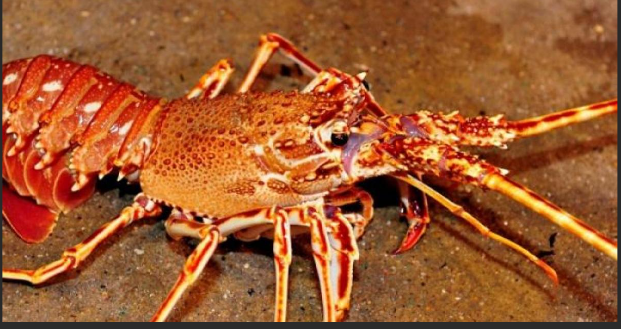

Difficile d'expliquer pourqoui des animaux se déplacent parfois sur des millièrs de kilomètres pour se nourrir ou se reproduire
Souvent après de grosses tempete les langoustes se rassemblent en colonne et se mettent à marcher jour et nuit à la recherche de nourriture sur des centaines de kilomètres! Devant un ennemi elles forment un cercle pour y échapper
Les thons sont de grands voyageurs : certains traversent le Pacifique des cotes du japon jusqu'à la Californie soit 9000 km. D'autre naissent en Méditettanée et vont se nourrir jusqu'au large de la Norvège soit 5000 km